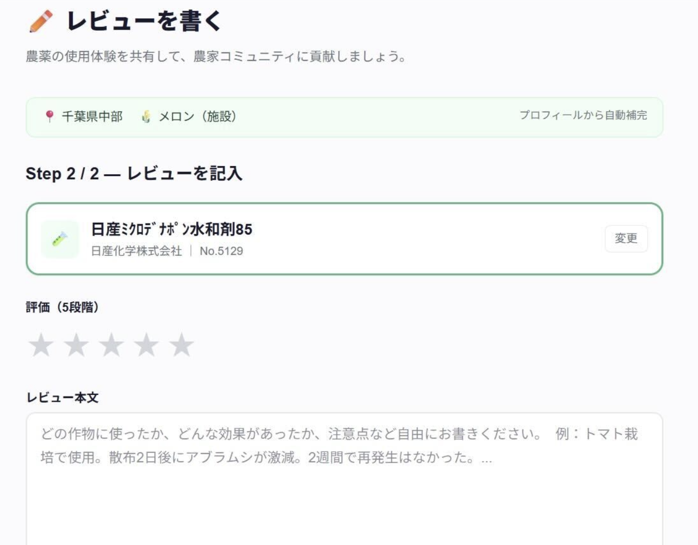
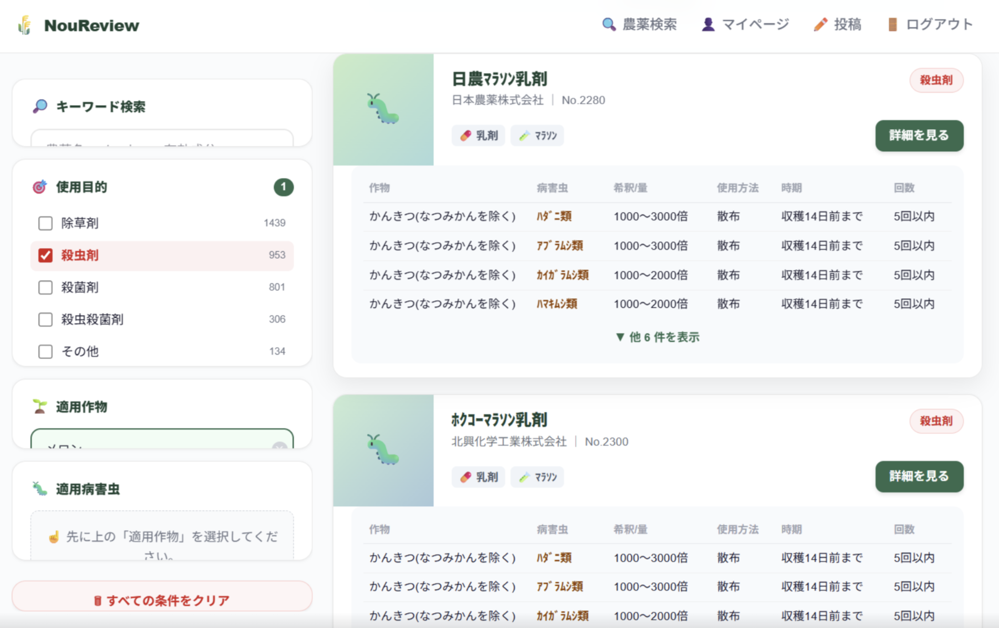

Farmii — ファーミィー
農家の意思決定を支える「Farmii」
「勘」や「過去の慣行」に頼る農業はもう終わりにしませんか？
Farmii（ファーミィー）は、地域・土質・作目の「前提条件」が揃ったリアルな口コミが見つかる、
農業資材版の食べログ（実践データベース）です。
Problems
実際に他の農家さんの圃場でうまくいっていないと、うちで使うのは不安。カタログのスペック表だけでは、自分の圃場で本当に効くかどうかはわかりません。
実際にどの地域、どの作目の、どんな農家さんが使った感想なのかが判断できない。前提条件がバラバラな情報は、参考にならない。
独自の散布方法や組み合わせの工夫などを、本当にわかる農家同士で語り合いたい。そんな専門的な議論ができる場所がない。
Farmiiは農家による農家のための
農業資材レビューのデータベースです 🌾
地域・土質・作目が一致した「本当に参考になる口コミ」だけが集まる。
あなたと同じ環境の農家さんの声で、安心して資材を選べます。
How it Works
自分と似た環境の農家が、どんな資材をどう使っているのかを一発で検索・比較できます。
「この時期にこの希釈倍率で」など、現場のリアルなレビューを閲覧。あなた自身のこだわりの防除や施肥の記録も、対象を選んで書くだけで簡単に投稿できます。
コミュニティに参加することで、マニアックな工夫を評価し合い、全国のプロ農家たちと知見をアップデートできます。
App Screen
条件付きレビュー検索と、投稿画面 ／ スマホ版も近日中に公開予定です


Advantage
愛知、和歌山、千葉などの豪族農家と直接繋がり、リアルな現場知見をいち早くデータ化。技術力のある農家が集まるから、質の高いレビューが自然と蓄積されます。
学生起業家として忖度しないリアルな声だけを集める設計。広告収入に依存しないため、ユーザーファーストの情報品質を維持し続けます。
Vision
奥田 朗盛（Rowsey Okuda）
東京大学 工学部 システム創成学科
幼少期をマダガスカルで過ごし、農業の「情報の非対称性」を肌で感じて育つ。JICAで稲作技術をアフリカに伝える活動を経て、国内の農家が抱える同じ構造的課題に着目。 「農家さんの知見を、世界の財産へ」――その信念でFarmiiを創業。
Recruit
あなたの経験が、他の農家さんを助け、
農業全体の発展につながる。
そんな未来を、一緒に創りませんか？
ご連絡はこちらまで
rowsey@g.ecc.u-tokyo.ac.jpJoin
あなたの経験が、日本の農業を変える第一歩になります